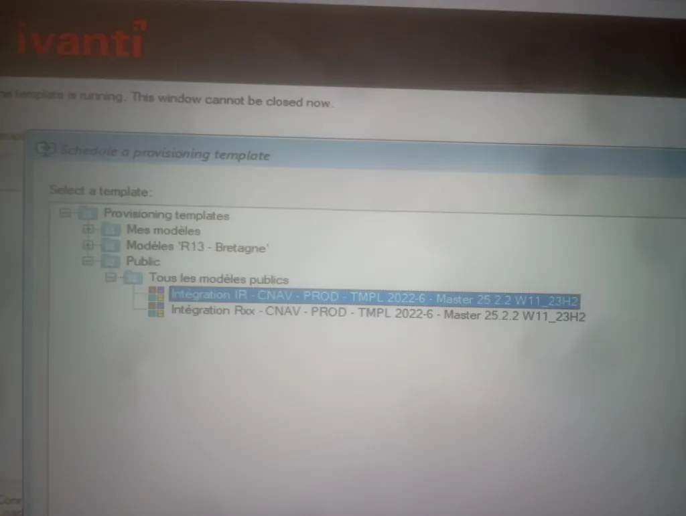
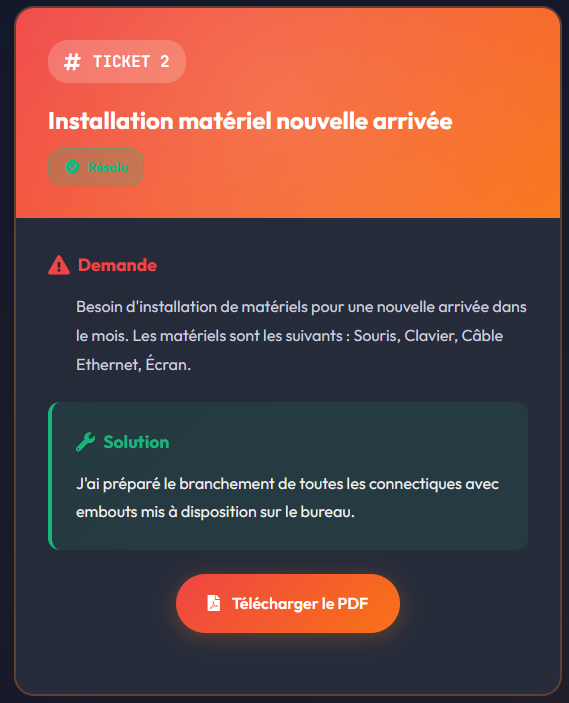
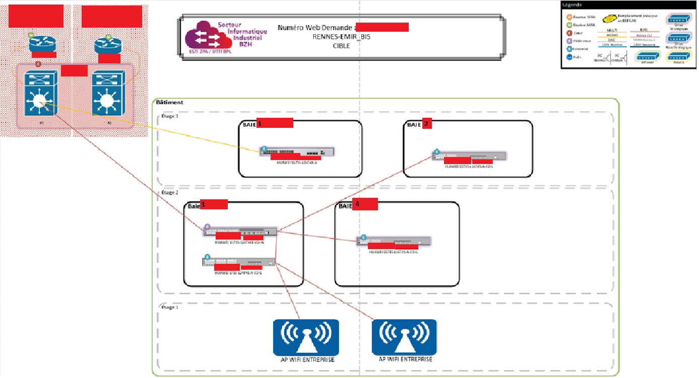
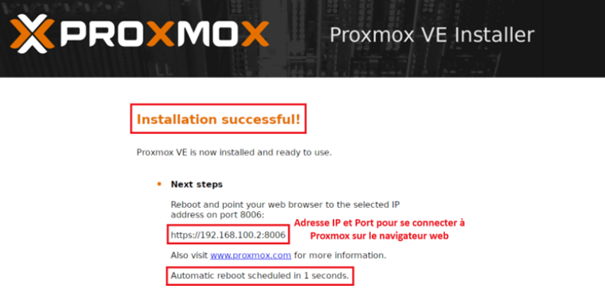
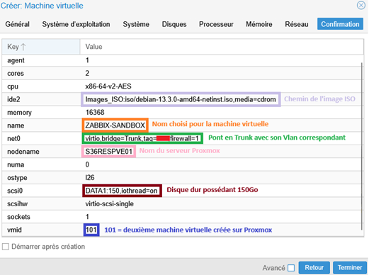
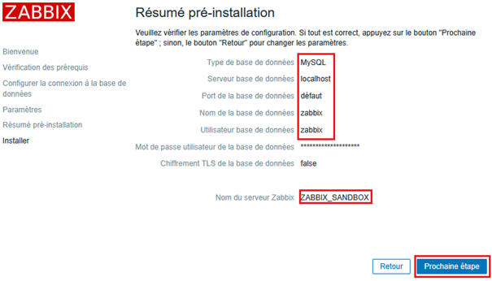
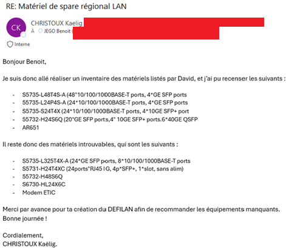
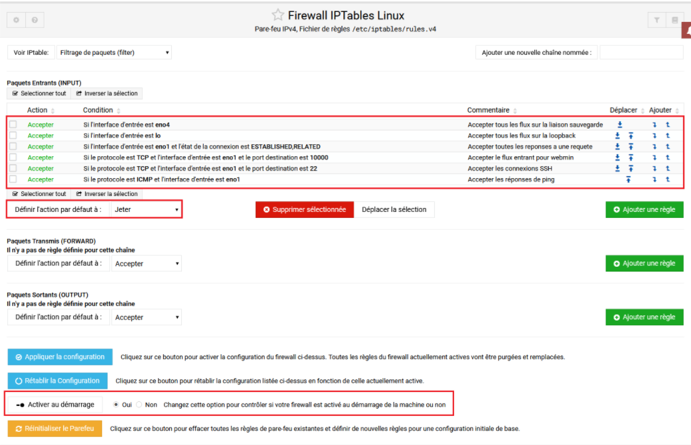

Deux ans de formation, deux stages, des ateliers professionnels et des veilles technologiques qui illustrent mon évolution dans les infrastructures réseau et systèmes.
Formation de deux ans au Lycée Victor et Hélène Basch à Rennes, axée sur l'administration des infrastructures systèmes et réseaux.
Formation de techniciens capables d'installer, configurer, sécuriser et administrer des infrastructures informatiques : virtualisation, supervision, sécurité réseau, administration système Windows et Linux.
Cours théoriques, ateliers professionnels pratiques et deux périodes de stage en entreprise pour appliquer les compétences dans un contexte professionnel réel.
Réseaux TCP/IP, virtualisation, Linux et Windows Server, cybersécurité, gestion de parc, relation utilisateur.
Projets encadrés permettant de mettre en pratique des compétences techniques sur des infrastructures réelles ou simulées.
Projet en binôme avec un étudiant développement. Mon rôle : toute la partie infrastructure (VM VirtualBox, IP statique Netplan, installation Odoo 16 avec PostgreSQL, choix et installation d'un addon). Mon binôme a créé les scripts Python générant des CSV clients, que j'ai importés dans Odoo pour valider la solution.
Déploiement d'une infrastructure d'entreprise complète en environnement simulé.
Windows Server, DNS Labannu, intégration des postes clients.
Gestion de parc, remontée d'inventaire manuelle.
Monitoring réseau en temps réel, tableaux de bord.
Pare-feu, règles de filtrage, NAT, segmentation des zones réseau.
Routage inter-VLAN, VLANs, port trunk, interconnexion de l'infrastructure.
Zone démilitarisée avec serveurs web, bases de données.
Compétence B1.6.3 — surveiller les évolutions techniques de son domaine pour rester à jour et anticiper les changements.
Comparaison avec Spectrum (CA Technologies)
Née de mon stage SNCF où j'ai déployé Zabbix tout en utilisant Spectrum au quotidien. Objectif : approfondir Zabbix, comparer les deux outils, suivre les versions 7.x. Sources : blog officiel, documentation, forum, YouTube, GitHub, Reddit.
Caisse d'Assurance Retraite et de la Santé au Travail Bretagne. Missions variées autour de la gestion du parc informatique et du support utilisateur.
Déploiement d'images Windows sur les postes utilisateurs via Ivanti, en appliquant les modèles de provisionnement définis par l'entreprise (CNAV PROD).

Configuration du nouveau poste (logiciels métier, réseau), planification de l'intervention avec l'utilisateur, puis migration des données depuis l'ancien poste. Mission alliant technique et relation utilisateur.
Traitement de tickets d'incidents : qualification, diagnostic, résolution ou escalade, clôture avec retour utilisateur. Prise en main des processus ITSM et des priorités de traitement.

Infrastructure réseau de grande envergure en Bretagne. Missions techniques : virtualisation, supervision et gestion du parc.
Étude et planification du renouvellement du parc de commutateurs en Bretagne : analyse de l'existant, identification des équipements obsolètes, conception des schémas réseau comparatifs (état actuel vs architecture cible).

Mise en place d'une infrastructure de virtualisation Proxmox VE, puis déploiement d'une VM Debian hébergeant Zabbix — destiné à remplacer Spectrum, l'outil propriétaire CA Technologies utilisé à la SNCF.
Installation de Proxmox
Serveur physique S36RESPVE01, configuration des interfaces réseau, stockage DATA1 (150 Go), pont Trunk avec VLAN dédié pour accueillir les VMs.

Création de la VM Zabbix sous Debian
VM ZABBIX-SANDBOX (ID 101) — 2 vCPU, 16 Go RAM, 150 Go, agent QEMU activé. Debian 13.3.0 installé en mode graphique avec IP statique dans le VLAN attribué.

Installation et configuration de Zabbix
Configuration NTP (ntp.sncf.fr), installation des 6 paquets Zabbix, base MySQL (utf8mb4), paramétrage Apache2/PHP, puis configuration de l'interface web.

Dans l'interface web Zabbix, seul PostgreSQL apparaissait comme type de BDD disponible. MySQL n'était pas détecté malgré un zabbix_server.conf correct.
Découverte dans le README.Debian de zabbix-frontend-php : le paquet php-mysql doit être installé manuellement. Après installation, MySQL détecté. Fichier zabbix.conf.php créé manuellement dans /etc/zabbix. Interface opérationnelle.
Interventions techniques ponctuelles menées en parallèle des missions principales au sein du service ESTI Atlantique.
Diagnostic et maintenance matérielle sur des PC format Tiny, incluant le dépoussiérage.
Câblage et connexion dans les baies de brassage du service ESTI Atlantique.

Recensement du parc et suivi par e-mail pour la mise à jour des fiches d'inventaire.

Vérification et sécurisation des règles firewall de l'infrastructure réseau.